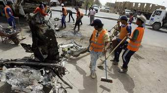

ULTIMOS ATENTADOS TERRORISTAS EN EUROPA
CONFLICTOS EN EL ORIENTE MEDIO
En la noche del viernes 13 de noviembre de 2015, tuvieron lugar 6 atentados en la ciudad de Paris, donde murieron 130 personas y hubo 350 heridos. Tres explosiones tuvieron lugar en Saint Denis, en los alrededores del estadio de Francia, donde se celebraba un partido entre Francia y Alemania al que asistía el presidente François Hollande. Los terroristas hicieron explotar sus cinturones de explosivos. Además de en el estadio, tambien tuvo lugar varios atentados en el restaurante 'Le Petit Cambodge', el local 'Belle Équipe', el bar 'Le Carillon', el Boluevar Fontaine y la sala de espectáculos Bataclan donde hombres armados con armas llamadas kalashnikov mientras gritaban "¡Alá es grande!" dispararon contra todo el que se cruzara en su camino, provocando lo el mayor atentado que ha sufrido Francia en su historia. Según ha confirmado el Fiscal general, François Molins, los terroristas estaban coordinados en tres grupos y informaron a Siria y a Irak de que iban a atacar. En total, 130 personas fallecieron, 89 de ellas murieron en la sala Bataclan y 350 heridos.
La Policía francesa ha logrado hasta el momento identificar a cinco de los autores de estos atentados. Las investigaciones, se centran en los siete terroristas que fallecieron. El atentado fue perpetrado por una congunto de yihadistas compuesta por hombres de nacionalidad francesa, algunos habitantes de Bélgica, y que realizaron ataques en Siria para su formación como combatientes de Estado Islámico. Los atentados fueron planificados en Siria, organizados en Bélgica y con cómplices en Francia. Las autoridades francesas afirman que dos de los terroristas se detonaron con sus cinturones y otro fue abatido por la policía. En los ataques de la sala Bataclan participaron: Ismael Omar Mostefai, fue identificado gracias a su huella dactilar de un dedo hallado en el lugar de la masacre donde se emboló. Estaba fichado por los servicios secretos franceses por integrismo islámico - Samy Amimour, fue el cuarto terrorista encontrado. Nació en Francia y luego se fugo para practicar el Islam. Ataques en el estado de Francia. Bilaf hadfi, vivía en Bélgica. Según fuentes, combatió en Siria junto al Estado Islámico Ahmah al Mohammad, nació en Siria.